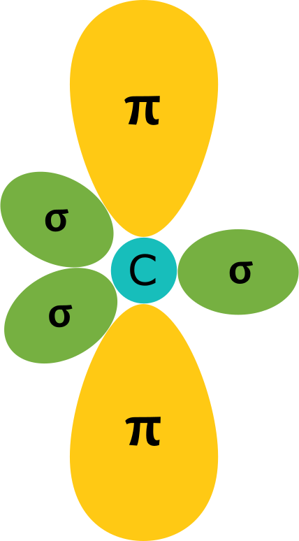

Hamiltoniano de amarre fuerte continuo para bajas energías¶
Para calcular la estructura de bandas en un sistema de gran tamaño, es posible utilizar la aproximación de amarre fuerte. Este método semi-empírico es de bajo costo computacional y permite la descripción de los estados electrónicos de nuestro interés.
Es importante recordar que nuestro sistema consta de carbonos con hibridación \(sp^2\), por lo que los orbitales atómicos tienen una simetría específica:

Ya que cada carbono tiene un electrón en el orbital \(p_z\), se considerará 1 orbital por sitio. Se asume que estos electrones estan altamente \(\textit{amarrados}\) al core, por lo que el traslape entre un orbital atómico y el otro es pequeño, limitado a primeros vecinos.
Para conocer los estados electrónicos, se debe resolver el problema de valores propios:
\begin{equation} \mathbb{H} \psi_{n} = E \mathbb{I} \psi_{n } \end{equation}
\begin{equation} det \vert \mathbb{H} - E \mathbb{I}\vert =0 \end{equation}
Por ser un sistema periódico en el espacio, se debe describir con funciones propias que satisfagan el teorema de Bloch:
\begin{equation} \psi_{n \textbf{k}}(\textbf{r}+\textbf{R}) = e ^{i \textbf{k}\cdot \textbf{R}}\psi_{n \textbf{k}}(\textbf{r}) \end{equation}
Al introducirlas al Hamiltoniano, este dependerá de \(\textbf{k}\) y adquirirá la forma:
\begin{equation} H_{\textbf{k}} = \begin{pmatrix} 0 & -t \alpha(\textbf{k}) \ -t \alpha(\textbf{k})^* & 0 \end{pmatrix} \end{equation}
donde:
\begin{equation} \alpha(\textbf{k}) = 1 + e^{(-i \textbf{k} \cdot \textbf{a}_1)} + e^{(-i \textbf{k} \cdot \textbf{a}_2)} \end{equation}
A continuación, se realiza el cálculo de los valores propios del Hamiltoniano anterior y se grafican en el espacio recíproco.
from pylab import *
import numpy as np
import math
import matplotlib.pyplot as plt
from scipy import linalg
from matplotlib import pyplot as plt
Relación de dispersión¶
def GetkPath(kpoints,numNk):
numP = len(kpoints)
Dist = []
for k in range(numP-1):
veck = kpoints[k+1]-kpoints[k]
D = sqrt( dot(veck,veck) )
Dist.append( D )
Dist = array(Dist)
Nk_p = array( [ int(numNk*D/Dist.sum()) for D in Dist ] )
if (Nk_p.sum()<numNk):
Nk_p[-1] = numNk - Nk_p[:-1].sum()
KX, KY = array([]),array([])
for k in range(numP-1):
KX = concatenate([KX,linspace(kpoints[k][0],kpoints[k+1][0],Nk_p[k])])
KY = concatenate([KY,linspace(kpoints[k][1],kpoints[k+1][1],Nk_p[k])])
return column_stack((KX,KY)),concatenate([[0],cumsum(Nk_p)])
d = 1.42
t = 2.97
b1 = 4*pi/3/d*array([ sqrt(3)/2,0.5])
b2 = 4*pi/3/d*array([-sqrt(3)/2,0.5])
bvec = array([b1,b2])
Γ = dot( array([ 0, 0]), bvec )
M = dot( array([1/2, 0]), bvec )
K = dot( array([2/3,1/3]), bvec )
Nkpoints = 1000
K,Kinfo = GetkPath([Γ,K,M,Γ],Nkpoints)
Klabel = [ r"$\Gamma$",r"${\rm K}$",r"${\rm M}$",r"$\Gamma$"]
H0_k = []
eigva = []
for kx,ky in K:
fk = np.sqrt( 4*np.cos(np.sqrt(3)/2*d*kx)*np.cos(3/2*d*ky) + 2*np.cos(np.sqrt(3)*d*kx) + 3 )
H = np.array([[ 0 , -t*fk ],
[np.conj(-t*fk) , 0 ]])
H0_k.append(H)
for n in H0_k:
x = linalg.eigvals(n)
eigva.append(np.sort(x.real))
eigva = array(eigva)
mpl.rcParams.update({'font.size': 18, 'text.usetex': True})
mpl.rcParams.update({'axes.linewidth':1.5})
mpl.rcParams.update({'axes.labelsize':'large'})
mpl.rcParams.update({'xtick.major.size':6})
mpl.rcParams.update({'xtick.minor.size':4})
mpl.rcParams.update({'ytick.major.size':6})
mpl.rcParams.update({'ytick.minor.size':4})
mpl.rcParams.update({'xtick.major.width':1.5})
mpl.rcParams.update({'xtick.minor.width':1.0})
mpl.rcParams.update({'ytick.major.width':1.5})
mpl.rcParams.update({'ytick.minor.width':1.0})
mpl.rcParams.update({'legend.frameon':False,'legend.framealpha':0.0})
a = sqrt(3)*d
fig,axes = plt.subplots(ncols=1,nrows=1,figsize=(10,5.6))
axes.plot(arange(Nkpoints),eigva.T[0])
axes.plot(arange(Nkpoints),eigva.T[1])
axes.set_ylabel(r'$E\,({\rm eV})$')
axes.set_title ('SLG Electronic spectrum')
for kl in Kinfo:
axes.plot([kl,kl],[-10,10],'--',lw=1,c='k' )
axes.set_xticks(Kinfo)
axes.set_xticklabels(Klabel)
fig.tight_layout()
fig.savefig("SLG.png")
Aparece una banda por cada átomo en la celda unitara con cada estado ocupado por 2 electrones (degeneración de espín). Al estar en una configuración neutra, la banda de menor energía está llena (\(E_\_(\textbf{k})\)) y la banda superior (\(E_+(\textbf{k})\)) está vacía, situando al nivel de Fermi en \(E=0\). Las bandas se tocan en los puntos de alta simetría \(K\) y \(K'\) (puntos de Dirac).